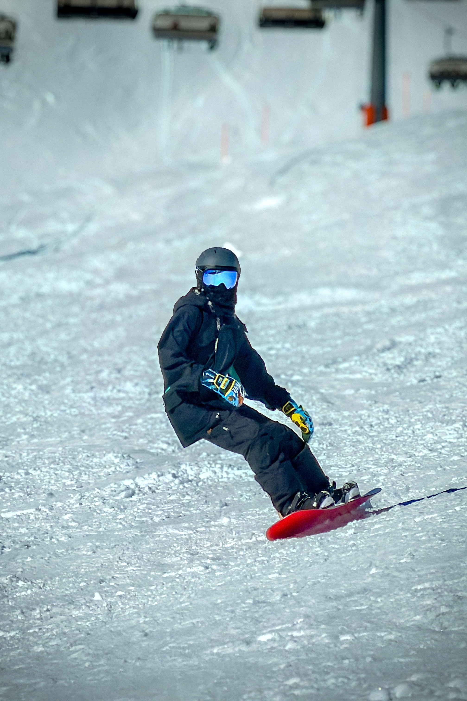

This portfolio is an experiment in constraint. Everything is made on iPhone, so the emphasis stays on timing, light, and disciplined framing.

Loading entry
Constraints that sharpen the work
Expose for highlights, lift shadows only when needed.
Wait for the single moment that carries the image.

Reduce to essential geometry. Let negative space breathe.
Small adjustments only. Contrast and tone stay restrained.

Handheld by design. Stabilize with breath and posture.
Every series follows the same discipline to keep the voice clear.

Jonah Kim
Jonah Kim is a Krakow-based photographer working across landscape, nature, architecture, and portraiture. Every image in this portfolio is made on iPhone to keep the focus on timing, light, and restraint. The work is a practical proof of a simple idea: skill matters more than gear.
Read full aboutStart a project
Commissions, collaborations, and editorial inquiries.
Email Jonah